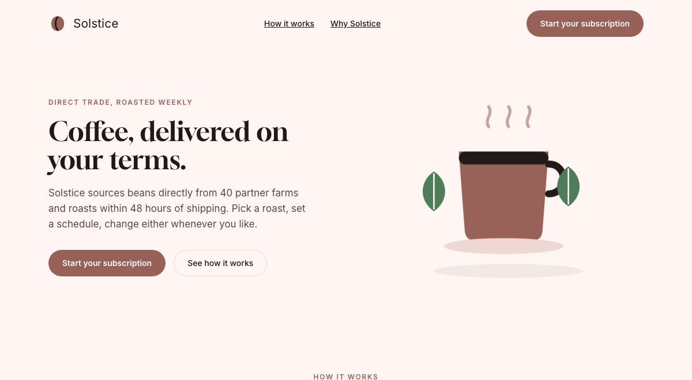
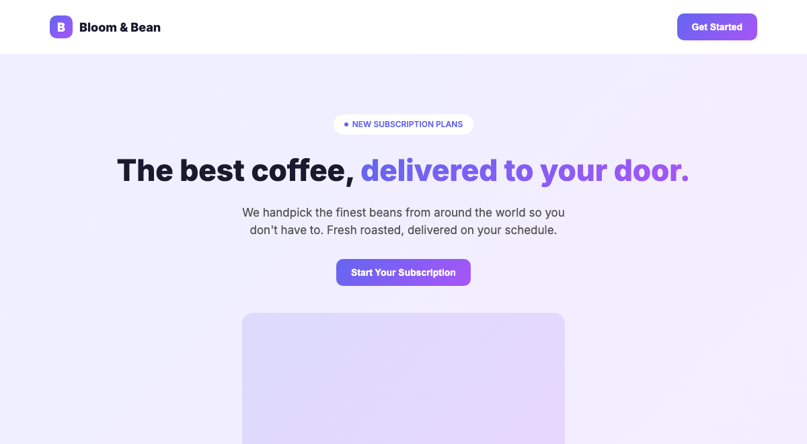
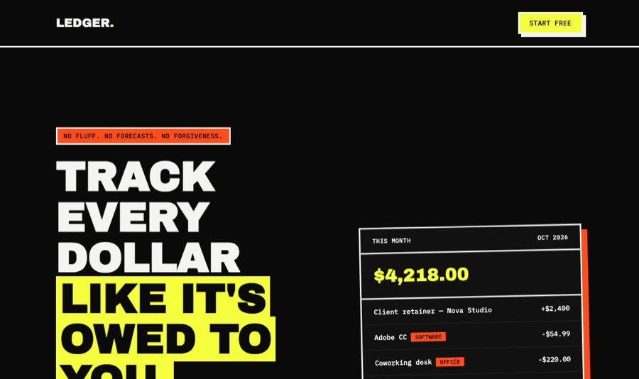
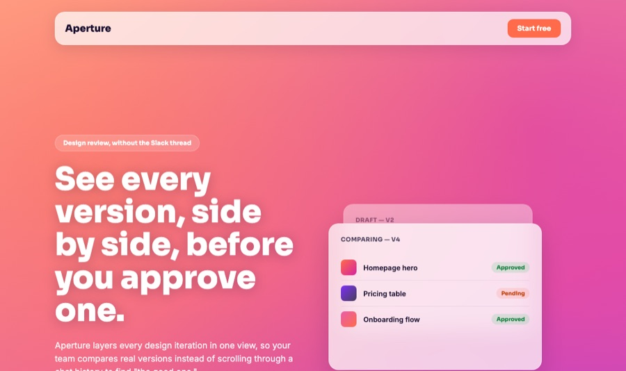
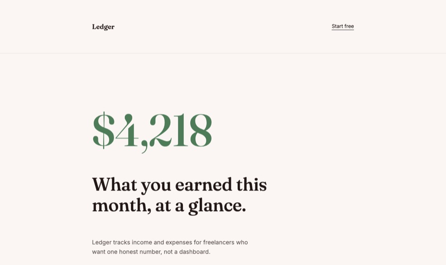
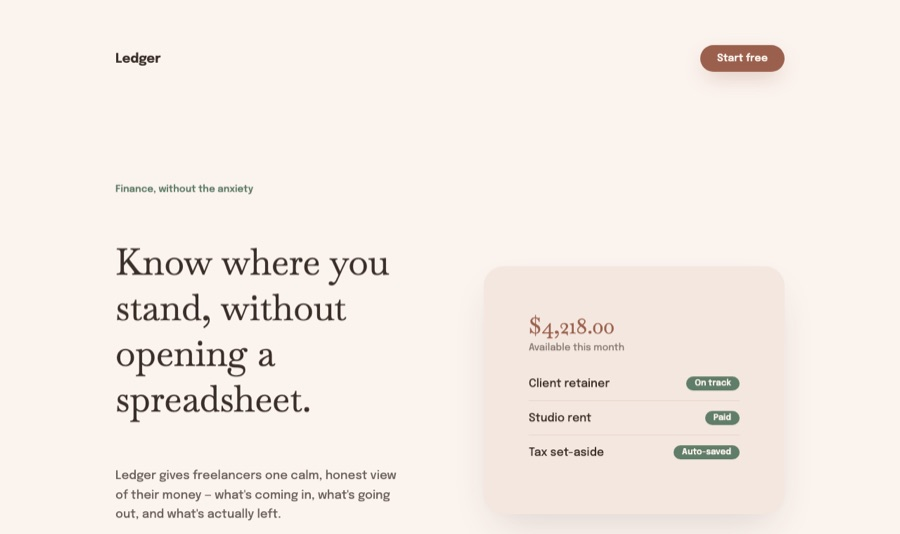

design taste for coding agents
Your agent writes working code.
It doesn't write good taste.
Tastemaker is a local skill that gives Claude Code, Gemini CLI, and Windsurf a real design process: study references, lock a palette that passes contrast, cast real assets, and remember what you keep.
npx skills add codeswithroh/tastemaker


Not a prompt pack. A real local skill.
the problem
Every agent defaults to the same page.
Purple-to-indigo gradient hero. Rounded card, soft shadow. A palette picked because it looked fine in the moment, never checked against anything. Ask ten agents for a landing page and you'll recognize the ninth one before it finishes rendering.
- HIGHai-gradientindigo-to-purple hero, unrelated to the product underneath it
- HIGHunchecked-contrastcolors picked by eye, never run against a single pairing
- MEDno-style-locknext screen in the same session drifts, nothing persists
how it works
Six checks run before the first component exists.
Every one of these is real: a script, a Markdown file, or a gate that has to pass. Nothing here is decorative.
- PASSreference-intelligencecompetitor + cultural board built before the first color
- PASScontrast-checkevery pairing run through real WCAG math
- PASSreal-assetsreal photography, real icons, real screenshots, no gray boxes
- PASSmotion-by-defaultscroll-driven reveals ship in the same pass, not a later step
- PASSstyle-lockpalette and type reused on every later screen, not re-derived
- PASSregister-varietybrutalist, glassmorphic, minimalist, or calm — one committed direction
proof, not claims
Checked with real math, not eyeballed.
Every pairing on this page runs through check_contrast.py before it ships. These are this page's actual numbers.
premium modes
Different products shouldn't wear the same suit.
Four sponsor-exclusive visual registers, generated by the same engine, committing to a real direction instead of a default.




Sponsor-exclusive, on top of the free core skill.
Unlock for $8/monthwhat changed
The skill remembers your taste.
Project style choices live in the repo. Personal preferences can live locally. A rejected direction becomes a guardrail for next time instead of getting forgotten.
.tastemaker/this project├── style-lock.md
Palette, type, shape, assets, motion, and do-not rules for this project.
└── decisions.log
Append-only keep, reject, and pending-review decisions from every design pass.
~/.tastemaker/your machine, every project└── profile.md
Reusable preferences, promoted only when you choose or repeat them.
free and local
Install once. Ask normally.
No hosted editor, no account, no separate design handoff. The taste layer lives where the agent already works.
npx skills add codeswithroh/tastemaker
Using Claude Code specifically? The plugin marketplace and manual install work too.